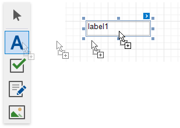
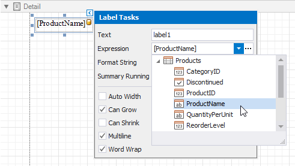
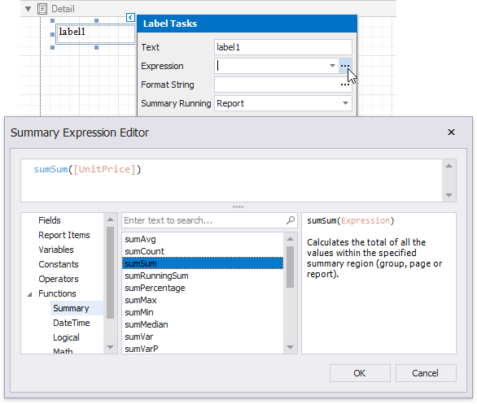
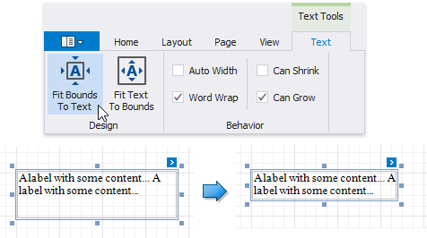
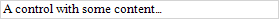
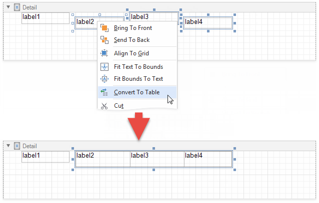
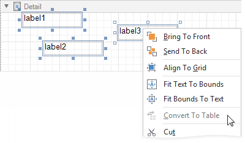
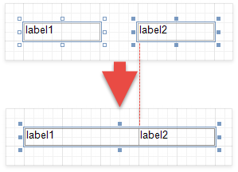
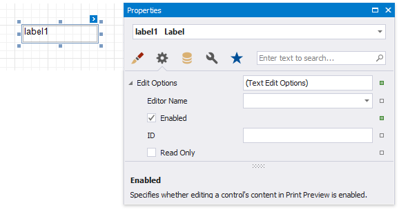

Label
Label Overview
The Label control displays plain text in a report. Drag the Label item from the Toolbox onto the report's area to add a Label control to it.

Double-click the label to invoke its in-place editor and enter the static text.

Press CTRL+Enter to submit text changes and exit the label's in-place edit mode.
Bind to Data
Display Field Values
You can bind the label's Text property to a data field obtained from a report's data source. Click the control's smart tag, expand the Expression drop-down list and select the data field.

Click the Expression option's ellipsis button to invoke the Expression Editor. You can use this editor to construct a complex binding expression from two or more data fields.

You can also drag and drop a numeric or text field from the Field List to create a new label bound to this field.

See the Bind Controls to Data topic for more information.
The Process Duplicates Mode, Process Duplicates Target and Process Null Values options enable you to hide a control when a duplicated or null value appears in an assigned data source.

You can also use the Format String property to specify output values' format.

Display Summaries
Specify a data range in the Summary Running property and select the summary function in the Summary Expression Editor to make the label display a summary function's result.

Adjust the Label Size and Content
Static Content
You can change label size at design time to fit its static text. Right-click the label and select the Fit Bounds To Text toolbar button:
If the Word Wrap option is enabled, the command displays control content on multiple lines. It reduces control height and adjusts its width to fit its content.

If the Word Wrap option is disabled and the control's content is partially visible, the command adjusts the control size to display this content.

The command's result also depends on the control's Text Alignment and Right To Left settings.
Use the Fit Text To Bounds button to adjust the control's font size to fit its area. The Word Wrap option defines whether the text can occupy multiple lines or should be in a single line.

These commands are not available in the following cases:
- A label's text is an empty string;
- A label's text is bound to data;
- A label's Angle property is specified.
Data-Bound Labels
The Can Grow and Can Shrink properties allow you to increase or decrease the control's height according to its content in Print Preview mode.
| Can Grow is enabled | Can Grow is disabled |
|---|---|
 |
 |
| Can Shrink is enabled | CanShrink is disabled |
|---|---|
|  |  |
The Auto Width property specifies whether to adjust a data-bound label's width to its content.
You can also use the opposite Text Fit Mode property to adjust a control's font size to fit its boundaries in Print Preview. This property is not available if the Can Grow, Can Shrink or Auto Width option is enabled.
| Text Fit Mode = None | Text Fit Mode = Grow Only | Text Fit Mode = Shrink Only | Text Fit Mode = Shrink And Grow |
|---|---|---|---|
 |
 |
 |
 |
See the Arrange Dynamic Report Content topic for more information.
Convert Labels to Table
You can convert multiple labels to a table to simplify control alignment.
Hold CTRL or SHIFT and click labels to select them. Right-click any of the selected labels and select Convert To Table from the context menu. A table with one row is added to the report instead of the selected labels.

The Convert To Table option is not available if any of the selected labels overlap horizontally.

The created table occupies horizontal space from the leftmost label's left edge to the rightmost label's right edge, and vertical space from the topmost label's top edge to the lowest label's bottom edge.
The horizontal gap between labels is included in the left cell.

The table cells copy all property values from the labels.
Interactivity
Check the Enabled option in the Edit Options category to allow users to edit a label's content in Print Preview mode.

Click this label in a previewed document to invoke the editor.

Use the label's Interactive Sorting option to allow users to click this label in Print Preview to sort report data. Set the Target Band property to the Group Header or Detail band, and specify the data field in the Field Name property.

Refer to Sort a Report in Print Preview for a step-by-step tutorial.
Markup Text
Enable the Allow Markup Text property to format the label's text with markup tags.

Label supports the following tags:
| Tag | End Tag | Supported in XLS / XLSX Export | Supported in DOCX Export | Description |
|---|---|---|---|---|
| <br> | </br> | Inserts a single line break. Enable the WordWrap property to use this tag. | ||
| <nbsp> | - | Inserts a space. | ||
| <color=value> | </color> | Specifies the text color. | ||
| <backcolor=value> | </backcolor> | Specifies the background color. | ||
| <size=value> | </size> | Specifies the font size. | ||
| <b> | </b> | Defines bold text. | ||
| <i> | </i> | Defines italic text. | ||
| <s> | </s> | Defines strikethrough text. | ||
| <u> | </u> | Defines underlined text. | ||
| <r> | </r> | Defines regular text. This resets any bold, italic, underlined, or strikethrough formats specified with tags or applied in the control’s appearance settings. | ||
| <sub> | </sub> | Specifies that the text is smaller and displayed lower than the previous character. Export to DOCX does not support nested sub elements. For example, double subscript: 2<sub>2<sub>2</sub></sub> | ||
| <sup> | </sup> | Defines that the text is smaller and displayed higher than the previous character. Export to DOCX does not support nested sup elements. For example, double superscript: 2<sup>2<sup>2</sup></sup> | ||
| <image=value> | - | Inserts an image from the report's named image collection. Supports both raster images and SVG images. Use the report's Image Resources property to provide images and reference them by their Id. The image tag's size attribute sets the image display pixel size. If the specified width/height exceeds the label's width/height, it is reduced to display the entire image. Specify the size attribute after the tag's value followed by the ";" character. | ||
| <href=value> | </href> | Displays a hyperlink. The value string specifies the hyperlink source, and the string between the opening and closing tags is the text to display. | ||
| <font> | </font> | Specifies the font family. You can combine it with the color and size settings within a single tag. |